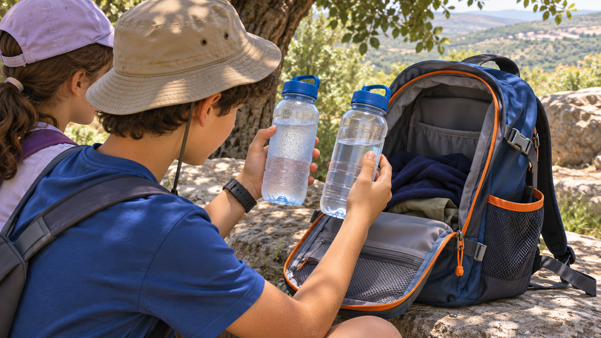

التدفئة والتبريد
شراب في النزهة
زجاجتان. الطريق نفسه. لماذا سخنت واحدة فقط؟

صباح بجانب الممرّ
«أغمض عينيك وقل أيّ زجاجة كانت في الشمس»، تحدّت ميكا أخاها آدم البالغ تسع سنوات في الاستراحة الأولى. لم يفهم آدم اللغز: مُلئت الزجاجتان صباحًا بماء بارد من الجهاز نفسه، وسافرتا معه في الحقيبة نفسها. كانت إحداهما في الجيب الجانبيّ والأخرى في الحجرة الداخليّة.
قبل الانطلاق كان آدم متأكّدًا أنّ الزجاجتين ستبقيان في درجة الحرارة نفسها. الآن، حين يلمسهما، لم يعد متأكّدًا. تقترح ميكا ألّا يسرعا في تفسير الفرق قبل فحص ما اختلف حقًّا.
الاستراحة الأولى
بعد ساعة تتوقّف العائلة للشرب. يخرج آدم الزجاجة من الجيب الجانبيّ ويُفاجأ بأنّ الماء أدفأ ممّا كان صباحًا. الزجاجة الثانية ما زالت تشعر ببرودة نسبيّة.
هم في مكان مظلّل وآمن، ولديهم ما يكفي من ماء للشرب. المشكلة ليست نقص الماء بل الرغبة في فهم لماذا تغيّر المشروبان بشكل مختلف في الطريق وكيف نحافظ على ظروف مريحة.
«الزجاجة الباردة كانت داخل الحقيبة»، يكتشف آدم. تكاد ميكا تعلن أنّها حلّت اللغز ثم تتوقّف: «لحظة، هل هما أصلًا من المادّة نفسها؟» فجأة لم يعد التفسير البسيط مؤكّدًا.
يتأمّل جداري الزجاجتين. إحداهما أغمق، وفي الثانية بقي ماء أقلّ قليلًا بعد توقّف الصباح. إذا تغيّرت عدّة أشياء معًا يصعب تحديد ما سبّب فرق درجة الحرارة. السؤال البسيط عن ماء بارد صار لغزًا.
لم يكن الطريق كلّه متشابهًا
تذكّر ميكا أنّ الحقيبة كانت في الشمس في جزء من المسار وتحت الأشجار في جزء آخر. وأثناء صعود قصير وضع آدم الحقيبة أيضًا على صخرة مكشوفة، لكنّه لا يتذكّر لمدّة كم.
مرّت الزجاجتان في المسار نفسه، لكنّهما لم تختبرا بالضرورة القدر نفسه من الشمس والملامسة للموادّ الأخرى. «النزهة نفسها» لا تعني «الظروف نفسها»، ويبدأ آدم في الانتباه للتفاصيل الصغيرة.
ماذا نريد أن نحافظ عليه
قبل الاستراحة التالية تريد العائلة أن تعرف إن كان من المفيد التفكير بطريقة أخرى للحفاظ على درجة حرارة الشراب. وهم لا يريدون جعل الحقيبة ثقيلة جدًّا أو إضافة معدّات مرهقة.
تقترح ميكا أوّلًا تعريف الحاجة: ماء متاح للشرب في أيّ وقت، وتفضيل أن يبقى ألطف حتّى بعد بضع ساعات. وهذه الحاجة تختلف عن مهمّة يجب فيها حفظ درجة حرارة دقيقة لأسباب سلامة.
ليست الشمس وحدها
يعتقد آدم أنّه إن وضع الزجاجة في مكان مظلم فستختفي المشكلة. تذكّره ميكا أنّ الهواء المحيط، والمادّة المصنوعة منها الزجاجة، ودرجة الحرارة في بداية الطريق ومدّة الزمن قد تؤثّر أيضًا.
لا يعرف أيّ منهما بعد أيّ عامل أثّر أكثر. ولا يعرفان إن كانت الزجاجة التي شعرت ببرودة بقيت كذلك على امتداد الطريق أو سخنت ببطء أكبر.
في تتمّة الممرّ ينفتح مكان مكشوف للشمس. ينقل آدم الزجاجة إلى جيب آخر ويشعر أنّه يفعل شيئًا مفيدًا، لكن ميكا تسأل: «كيف نعرف إن ساعد ذلك إن لم نقيس قبل وبعد؟» يكتشف آدم أنّ الحلّ الذي بدا واضحًا يعتمد حتّى الآن على الإحساس فقط.
يقترحان تسجيل زمن المشي، والمكان الذي حُملت فيه كلّ زجاجة، والإحساس في كلّ توقّف، ثم يفهمان أنّ وصفًا دقيقًا لا يحلّ دائمًا محلّ القياس. وهذا التمييز يثير فضول آدم أكثر ممّا توقّع: هل يمكن لزجاجتين تبدوان شبه متماثلتين أن تتحرّكا بشكل مختلف تمامًا؟
ماذا يمكن مقارنته
لديهم زجاجتان، ومكانان للتخزين، وزمن مشي تقريبيّ. وتنقصهم قياسات من بداية الطريق، وتوثيق للتعرّض للشمس، وتفاصيل عن بنية كلّ زجاجة.
يكتشف آدم أنّه يمكن طرح سؤال أدقّ من «كيف نبرّد الماء»: أيّ ظروف تجعل الماء يغيّر درجة حرارته وما الذي يؤثّر في سرعة التغيّر؟
قبل أن نبتكر
تواصل العائلة النزهة وتشرب حسب الحاجة، من دون تأجيل الشرب فقط لأنّ الماء ليس باردًا. يقرّر آدم أن يسجّل بعد النزهة ما اكتشفه وما ما زال ينبغي توضيحه.
إذا أردتم مساعدته، كيف تميّزون بين إحساس اللمس وبين القياس؟ وكيف تخطّطون مقارنة عادلة بين ظروف مختلفة؟ وما المهمّ معرفته عن مستخدمين يحتاجون إلى حمل الزجاجة طوال يوم كامل؟
تلميح من عالم الفضاء
تتعرّض المركبة الفضائيّة لتغيّرات في ظروف التدفئة والتبريد، ولذلك يختار المهندسون الموادّ ومواقع المكوّنات وفق طريقة انتقال الحرارة. فكّروا كيف قد تؤثّر ظروف البيئة والموادّ أيضًا في جسم يُحمل في نزهة.
بعد القراءة — في ورقة الفريق
تحدّثوا في الفريق وأجيبوا استنادًا إلى معلومات القصّة. إذا نقصت معلومة، اكتبوا سؤالًا للمتابعة.
- من تريدون مساعدته في القصّة؟
- ماذا يحاول أن يفعل وما الذي يصعّب عليه ذلك؟
- ما الذي يحتاج إلى أن يكون قادرًا على فعله؟
- ما الذي تريدون معرفته أيضًا قبل تطوير الأفكار؟